먼저 생각해 보세요.
Ich hätte gern neue Kopfhörer. Yuna에게 지금 새 헤드폰이 있나요?
hätte gern은 지금은 없지만 갖고 싶다는 말이에요.
A2.2 Entdecken · Lektion 5
용돈과 소비
음성은 준비 중이에요. 듣기 단추와 받아쓰기는 음성이 올라오면 쓸 수 있어요. 그동안은 글을 읽으면서 공부해요.
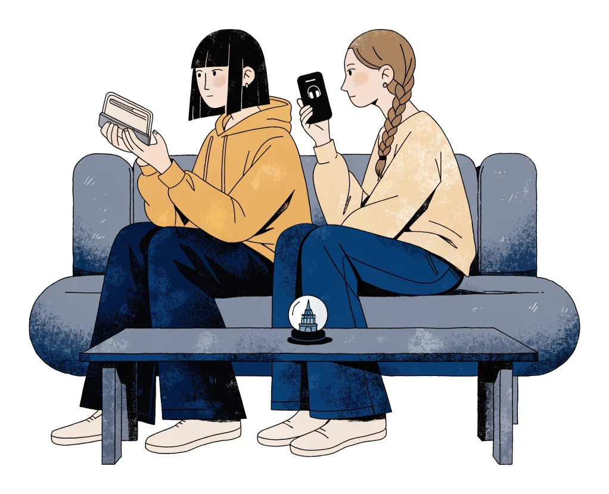
7월 초, 수학여행에서 돌아왔어요. Yuna는 베를린에서 용돈을 거의 다 썼어요. 그런데 갖고 싶던 헤드폰의 광고가 눈에 띄어요.
눌러서 들어 보세요.
먼저 생각해 보세요.
Ich hätte gern neue Kopfhörer. Yuna에게 지금 새 헤드폰이 있나요?
hätte gern은 지금은 없지만 갖고 싶다는 말이에요.
Lektion 4의 낱말 다섯 개를 다시 떠올려 보세요.
문법 würde, hätte, wäre (Wünsche), Dativ und Akkusativ im Satz (Ich gebe es ihm.)
이 과를 마치면 용돈과 쓴 돈을 말하고, 바라는 것을 말하고, 광고에 대해 이야기할 수 있어요.
수학여행에서 돌아온 다음 주예요. Emma가 휴대폰에서 광고를 봤어요.
들으면서 찾아보세요. Yuna에게 남은 돈은 얼마인가요?
저녁 식탁이에요. Yuna가 Sabine와 Thomas에게 헤드폰 이야기를 해요.
들으면서 찾아보세요. Thomas는 Yuna에게 무엇을 먼저 하라고 하나요?
두 대화를 듣고 답하세요.
Was kosten die Kopfhörer in der Werbung?
Yuna는 왜 헤드폰을 살 수 없나요?
Yuna hat noch zwölf Euro.
Wofür spart Emma?
Was würde Thomas zuerst machen?
Emma findet, dass sie genug Taschengeld bekommt.
30 Euro im Monat sind zu wenig!
두 사람은 어떻게 돈을 벌 수 있나요?
낱말 29개예요. 낱말이나 예문 앞의 단추를 누르면 소리가 나요. 명사는 der, die, das를 색으로 구분했어요.
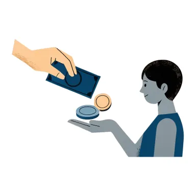
das Taschengeld 용돈
Ich bekomme 30 Euro Taschengeld.나는 용돈을 30유로 받아요.
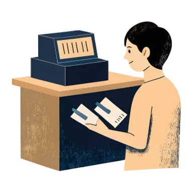
ausgeben (du gibst aus, er gibt aus) (돈을) 쓰다
Ich gebe viel Geld für Essen aus.나는 먹는 데 돈을 많이 써요.
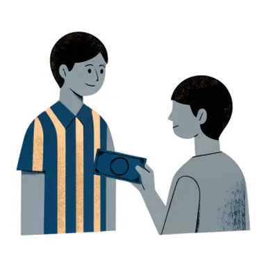
leihen, hat geliehen 빌려주다
Kannst du mir zehn Euro leihen?나한테 10유로 빌려줄 수 있어?
der Preis, die Preise 가격
Der Preis ist zu hoch.가격이 너무 높아요.
vergleichen, hat verglichen 비교하다
Ich vergleiche die Preise.나는 가격을 비교해요.
billig 싼
Das T-Shirt ist billig.그 티셔츠는 싸요.
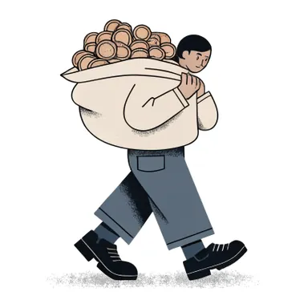
reich 부유한, 돈이 많은
Ich wäre gern reich.나는 부자면 좋겠어요.
arm 가난한
Er ist nicht arm.그는 가난하지 않아요.
das Bargeld 현금
Ich habe kein Bargeld.나는 현금이 없어요.
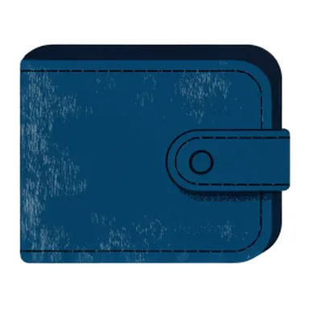
der Geldbeutel, die Geldbeutel 지갑
Mein Geldbeutel ist leer.내 지갑이 비었어요.
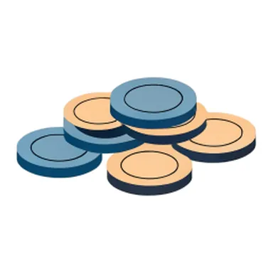
die Münze, die Münzen 동전
Ich habe nur Münzen.나는 동전밖에 없어요.
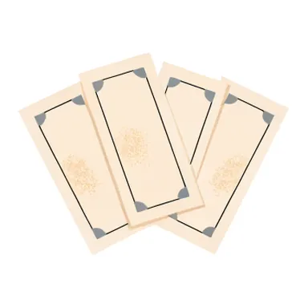
der Schein, die Scheine 지폐
Hier ist ein Zehn-Euro-Schein.여기 10유로짜리 지폐가 있어요.
der Job, die Jobs 일, 아르바이트
Paul hat einen Job.Paul은 아르바이트를 해요.
pro ~마다, ~당
Ich verdiene zehn Euro pro Stunde.나는 한 시간에 10유로를 벌어요.
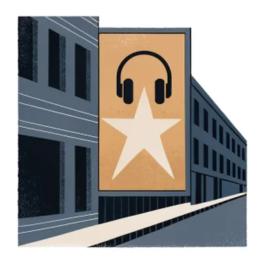
die Werbung 광고
Die Werbung ist lustig.그 광고는 웃겨요.
das Produkt, die Produkte 상품, 제품
Das Produkt ist neu.그 제품은 새로 나왔어요.
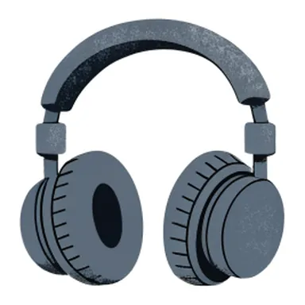
der Kopfhörer, die Kopfhörer 헤드폰
Meine Kopfhörer sind kaputt.내 헤드폰이 고장 났어요.
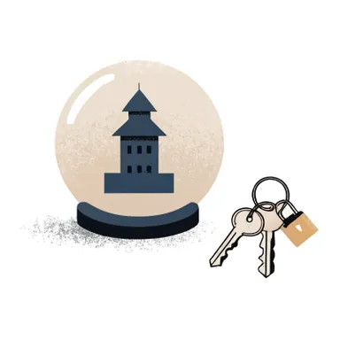
das Souvenir, die Souvenirs 기념품
Ich habe in Berlin Souvenirs gekauft.나는 베를린에서 기념품을 샀어요.
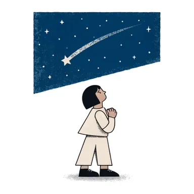
der Wunsch, die Wünsche 바람, 소원
Ich habe einen Wunsch.나는 바라는 게 하나 있어요.
sofort 바로, 당장
Ich komme sofort.바로 갈게요.
versprechen (du versprichst, er verspricht) 약속하다
Ich verspreche es dir.너한테 약속할게.
Ich hätte gern … ~을 갖고 싶어
Ich hätte gern einen Hund.나는 개를 키우고 싶어요.
Ich wäre gern … ~이면 좋겠어
Ich wäre jetzt gern am Meer.지금 바다에 있으면 좋겠어요.
Ich würde gern … ~하고 싶어
Ich würde gern nach Japan reisen.나는 일본에 여행 가고 싶어요.
reisen, ist gereist 여행하다
Wir reisen im Sommer nach Korea.우리는 여름에 한국으로 여행 가요.
selbst 스스로, 직접
Ich bezahle das selbst.그건 내가 직접 낼게요.
genug 충분히, 넉넉한
Ich habe nicht genug Geld.나는 돈이 모자라요.
etwas 조금, 어떤 것
Ich brauche etwas Geld.나는 돈이 조금 필요해요.
ganz 전부의, 온
Ich habe mein ganzes Geld ausgegeben.나는 돈을 다 썼어요.
이 과의 낱말로 여덟 문제를 풀어요.
예문을 보고 답해 보세요.
Ich hätte gern einen Hund. 이 말을 한 사람에게 지금 개가 있나요?
규칙
지금 사실은 아니지만 그랬으면 좋겠다고 말할 때 hätte, wäre, würde를 써요. 갖고 싶은 것은 hätte gern, 되고 싶은 상태나 있고 싶은 곳은 wäre gern, 하고 싶은 일은 würde gern과 동사 원형으로 말해요.
| 주어 | haben → hätte | sein → wäre | 다른 동사 → würde + 원형 |
|---|---|---|---|
| ich | hätte | wäre | würde |
| du | hättest | wärst | würdest |
| er, sie, es | hätte | wäre | würde |
| wir | hätten | wären | würden |
| ihr | hättet | wärt | würdet |
| sie, Sie | hätten | wären | würden |
주의 Ich hätte gern neue Kopfhörer. Ich wäre gern reich. Ich würde gern nach Japan reisen. würde 뒤의 동사는 원형으로 맨 끝에 와요.
예문을 보고 답해 보세요.
Kannst du mir 30 Euro leihen? 에서 먼저 오는 것은 무엇인가요?
규칙
geben, leihen, zeigen, schenken, schicken 같은 동사는 '누구에게'(3격)와 '무엇을'(4격)을 함께 써요. 보통 사람이 먼저, 물건이 나중에 와요. 하지만 물건을 es, sie, ihn 같은 대명사로 말하면 그 대명사가 먼저 와요.
| 문장 | 순서 |
|---|---|
| Ich gebe meinem Bruder das Geld. | 3격 명사, 4격 명사 |
| Ich gebe ihm das Geld. | 3격 대명사, 4격 명사 |
| Ich gebe es meinem Bruder. | 4격 대명사, 3격 명사 |
| Ich gebe es ihm. | 4격 대명사, 3격 대명사 |
주의 짧은 대명사가 앞으로 온다고 기억해요. 대명사가 둘이면 4격이 먼저예요. Ich gebe es dir.
예문을 보고 답해 보세요.
für 뒤에는 몇 격이 오나요?
규칙
돈을 어디에 쓰는지, 무엇을 사려고 모으는지 말할 때 für와 4격을 써요. 물을 때는 Wofür?라고 해요. ausgeben은 분리 동사라서 aus가 문장 맨 끝으로 가요.
| 물음 | 답 |
|---|---|
| Wofür gibst du dein Geld aus? | Für Essen und Kino. |
| Wofür sparst du? | Für einen Computer. |
| Wofür sparst du? | Für ein neues Handy. |
| Wofür sparst du? | Für eine Reise. |
주의 지난 일은 ausgegeben으로 말해요. Ich habe zwanzig Euro für Souvenirs ausgegeben.
라디오에서 광고가 나와요. 듣고 답하세요.
Werbung im Radio
Werbung Neu im Musikladen am Dom: Kopfhörer für Schüler!
Werbung Sie sind leicht, bequem und in fünf Farben da.
Werbung Diese Woche kosten sie nur vierzig Euro. Sie sparen zwanzig Euro!
Werbung Aber nur bis Samstag. Kommen Sie schnell!
Was kosten die Kopfhörer diese Woche?
Wie viel spart man?
Die Kopfhörer gibt es nur in einer Farbe.
Sie sind in fünf Farben da.
이 가격은 언제까지인가요?
듣고 알맞은 것을 고르세요.
Emma는 무엇을 사려고 돈을 모으나요?
Ich spare für ein neues Fahrrad.
Lukas에게 지금 개가 있나요?
Ich hätte gern einen Hund.
Elif는 무엇을 부탁하나요?
Kannst du mir deinen Stift leihen?
Yuna는 언제 돌려주나요?
Ich gebe es dir morgen zurück.
Yuna가 6월에 받은 돈과 쓴 돈을 적었어요. 보고 답하세요.
Yunas Geld im Juni
| Was? | Euro |
|---|---|
| Taschengeld | + 40 |
| Geschenk von Oma | + 20 |
| Souvenirs in Berlin | – 22 |
| Essen in Berlin | – 15 |
| Kino | – 8 |
| Geschenk für Mina | – 3 |
| Rest | 12 |
Wie viel Taschengeld bekommt Yuna im Monat?
Wofür hat Yuna am meisten Geld ausgegeben?
Yuna hat im Juni 20 Euro von ihrer Oma bekommen.
6월 말에 Yuna에게 남은 돈은 얼마인가요?
반 블로그에 올라온 글이에요. 읽고 답하세요.
Wofür gibst du dein Taschengeld aus?
Lukas: Ich bekomme 25 Euro im Monat. Ich gebe fast alles für Essen aus. Ich würde gern sparen, aber ich habe immer Hunger!
Elif: Ich bekomme 30 Euro. 15 Euro spare ich jeden Monat. Ich hätte gern eine gute Kamera.
Paul: Ich bekomme kein Taschengeld. Ich bringe jeden Samstag Zeitungen zu den Leuten. Da verdiene ich 40 Euro im Monat.
Emma: Ich spare seit einem Jahr für ein Fahrrad. Bald habe ich genug Geld!
Wofür gibt Lukas sein Geld aus?
Was hätte Elif gern?
Paul bekommt 40 Euro Taschengeld von seinen Eltern.
Paul은 용돈을 받지 않고 신문을 돌려서 돈을 벌어요.
Emma는 언제부터 돈을 모으고 있나요?
한국어 뜻을 보고 hätte, wäre, würde 가운데 알맞은 말을 고르세요.
Ich gern neue Kopfhörer.
새 헤드폰을 갖고 싶어요.
Ich gern reich.
부자면 좋겠어요.
Ich gern nach Japan reisen.
일본에 여행 가고 싶어요.
Emma gern mehr Taschengeld.
Emma는 용돈을 더 받고 싶어 해요.
Wir jetzt gern am Meer.
우리는 지금 바다에 있으면 좋겠어요.
du gern in Berlin wohnen?
너는 베를린에 살고 싶어?
지난 사실인지 바라는 것인지 보고 고르세요.
Gestern ich keine Zeit.
어제 나는 시간이 없었어요.
지난 사실은 두 점이 없는 hatte예요.
Ich gern mehr Zeit.
시간이 더 있으면 좋겠어요.
Letztes Jahr ich in Seoul.
작년에 나는 서울에 있었어요.
Ich jetzt gern in Seoul.
지금 서울에 있으면 좋겠어요.
누구에게 무엇을 주는지 보고 알맞은 말을 고르세요.
Kannst du zehn Euro leihen?
나한테 10유로 빌려줄 수 있어?
Ich gebe das Geld morgen zurück.
내일 너한테 돈을 돌려줄게.
Oma gibt zehn Euro pro Stunde.
할머니는 우리에게 한 시간에 10유로를 주세요.
Ich schenke ein Buch.
나는 친구에게 책을 선물해요.
Leihst du dein Fahrrad?
그에게 네 자전거를 빌려줄 거야?
Das ist mein Stift. Gib bitte!
그건 내 펜이야. 그걸 나한테 줘!
대명사가 둘이면 4격이 먼저예요.
낱말을 순서대로 눌러 문장을 만드세요.
나는 용돈을 더 받고 싶어.
나한테 10유로 빌려줄 수 있어?
내일 그걸 너한테 돌려줄게.
나는 자전거를 사고 싶어.
낱말과 뜻을 짝지으세요.
듣고 그대로 써 보세요.
음성 준비 중Die hätte ich gern. 저거 갖고 싶다.
음성 준비 중Kannst du mir Geld leihen? 나한테 돈 좀 빌려줄 수 있어?
음성 준비 중Ich spare für ein neues Fahrrad. 나는 새 자전거를 사려고 돈을 모으고 있어.
Wie viel Taschengeld bekommst du? 용돈을 얼마나 받아?
Ich bekomme 30 Euro im Monat. 한 달에 30유로 받아.
Ich gebe viel Geld für Essen aus. 나는 먹는 데 돈을 많이 써.
Ich spare für … 나는 ~을 사려고 돈을 모아.
Ich hätte gern … ~을 갖고 싶어.
Ich wäre gern … ~이면 좋겠어.
Ich würde gern … ~하고 싶어.
Das wäre toll! 그러면 정말 좋겠다!
Kannst du mir … leihen? 나한테 ~ 빌려줄 수 있어?
Ich gebe es dir morgen zurück. 내일 돌려줄게.
Versprochen! 약속해!
Die Werbung sagt, dass … 광고에서는 ~라고 해.
Das glaube ich nicht. 나는 그 말을 안 믿어.
Ich würde zuerst die Preise vergleichen. 나라면 먼저 가격을 비교해 보겠어.
대화 A에서 역할을 하나 고르세요. 상대의 말은 음성으로 나오고, 내 차례에는 직접 말해요.
갖고 싶은 것, 지금 있고 싶은 곳, 하고 싶은 일을 적으세요. 완성된 문장을 소리 내어 읽어 보세요.
Ich hätte gern einen Hund.
Ich wäre jetzt gern am Meer.
Ich würde gern nach Japan reisen.
Mein Taschengeld
내 용돈 이야기를 써 보세요. 여섯 문장쯤 써요.
Ich bekomme 30 000 Won in der Woche. Ich gebe viel Geld für Essen und Kino aus. Jeden Monat spare ich ein bisschen für ein neues Handy. Ich hätte gern mehr Taschengeld. Ich würde auch gern in den Ferien Geld verdienen. Ich finde, dass man der Werbung nicht alles glauben sollte.
다 쓴 뒤에 확인해 보세요.
Ich kann über mein Taschengeld sprechen.내 용돈에 대해 말할 수 있어요.
Ich kann Wünsche sagen.바라는 것을 말할 수 있어요.
Ich kann über Werbung sprechen.광고에 대해 말할 수 있어요.